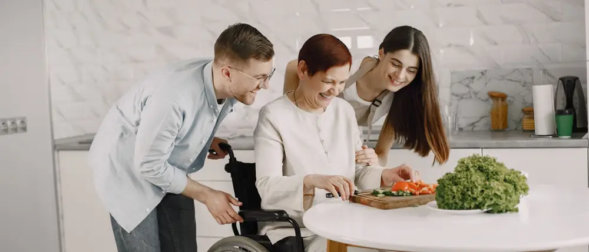
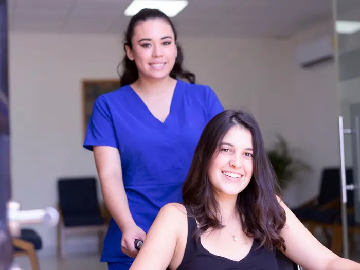
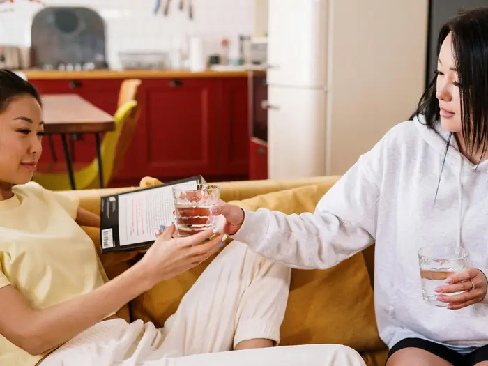
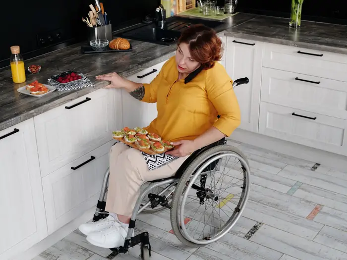
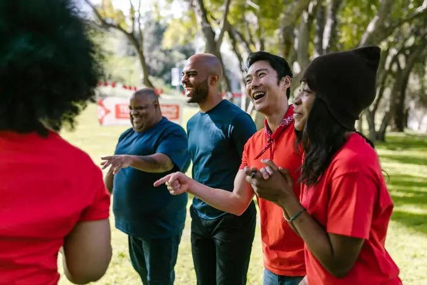
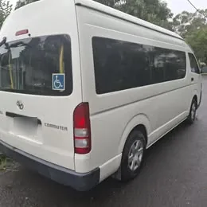
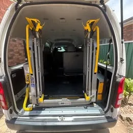
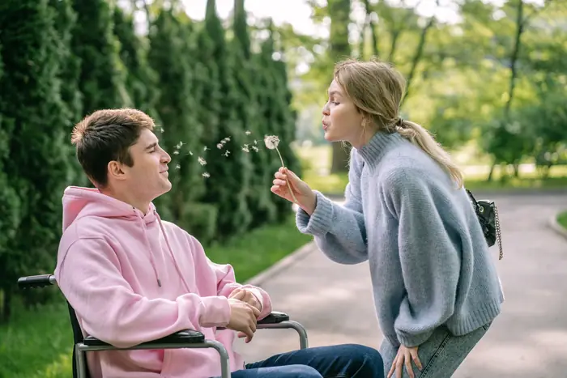

Home Services
NDIS support services in Sydney
As a registered NDIS provider, we offer four core services for participants across Sydney, plus transport in our own wheelchair-accessible van. Each one is tailored to the person, and you can combine them in one plan.

Health assistance
Staying well takes effort, and you don't have to manage it alone. We help with the health-related parts of your day, in a way that fits your routine, your goals and your NDIS plan.
This can include:
- Support to keep up the health routines that are part of your plan
- Help getting ready for, and getting to, your appointments
- Keeping your family or support team in the loop, with your permission


Home care
Home should feel safe, calm and comfortable. We help with household tasks and keep things running the way you like them, so your energy goes to the things you enjoy.
This can include:
- Household tasks around your home
- Keeping your space safe, tidy and easy to move around
- Support that follows your routine and the way you like things done


Support with daily personal activities
Personal routines are personal. We help respectfully and at your pace, building on what you can already do, so you keep as much independence as you want.
This can include:
- Help with personal routines, such as getting ready for the day
- Support at the times of day that suit you
- Care that respects your privacy, dignity and choices

Community participation
Being part of your community matters. We support you to get out, join in and enjoy community events and activities, with someone you trust beside you.
This can include:
- Community events, groups and activities
- Trying a new interest, or getting back to an old one
- Building confidence when you're out and about





Assistance with travel and transport arrangements: NDIS approved
Wheelchair-accessible transport
We have our own wheelchair-accessible van, so getting to appointments, outings and community activities is simpler and safer.
- Help getting to and from appointments
- Getting to community events, groups and activities
- Everyday outings, errands and visits
Every support we're approved to provide
Care United Group Pty Ltd is approved by the NDIS Quality and Safeguards Commission for these 13 registration groups. If your plan includes any of them, ask us how we can help.
- Assistance with daily personal activities
- Household tasks
- Participation in community, social and civic activities
- Innovative community participation
- Group and centre-based activities
- Assistance with travel and transport arrangements
- Development of daily living and life skills
- Help with daily tasks in shared living
- Supported Independent Living (SIL)
- Accommodation and tenancy assistance
- Support through life stages and transitions
- Help to find and keep a job or study
- Assistive products for household tasks
Source: NDIS Quality and Safeguards Commission provider register (opens in a new tab). Names simplified into plain English.

Every service starts the same way
Whichever support you choose, we begin by understanding you.
We assess your needs
A conversation about your needs, your capabilities and what you'd like help with.
We create a tailored plan
A plan designed around you, your routine and your NDIS plan.
We adapt and refine it
We review your support and adjust it whenever your needs change.
Not sure which support you need?
Tell us about your week and what you'd like help with. We'll suggest options that fit you.
